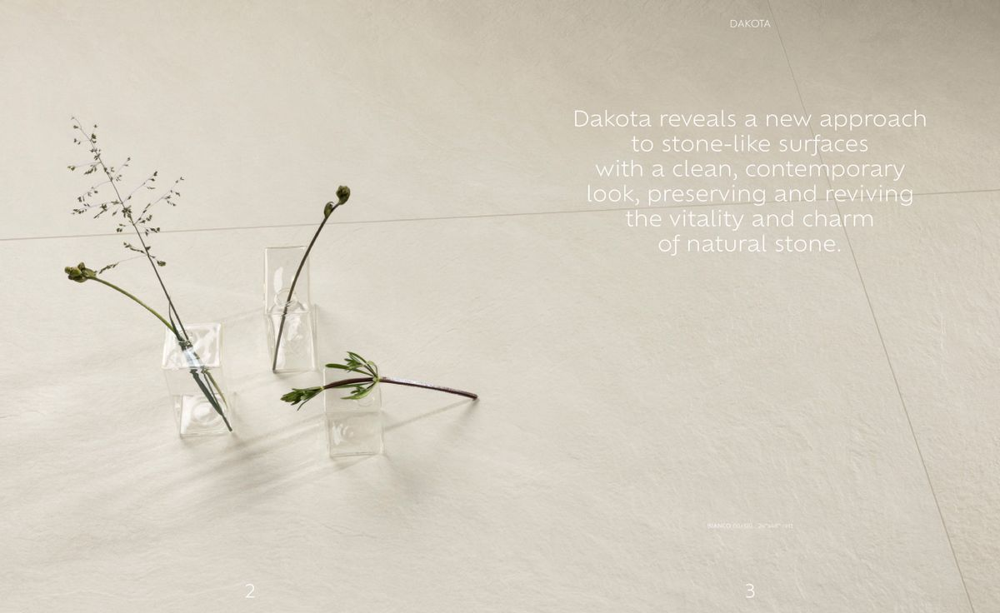
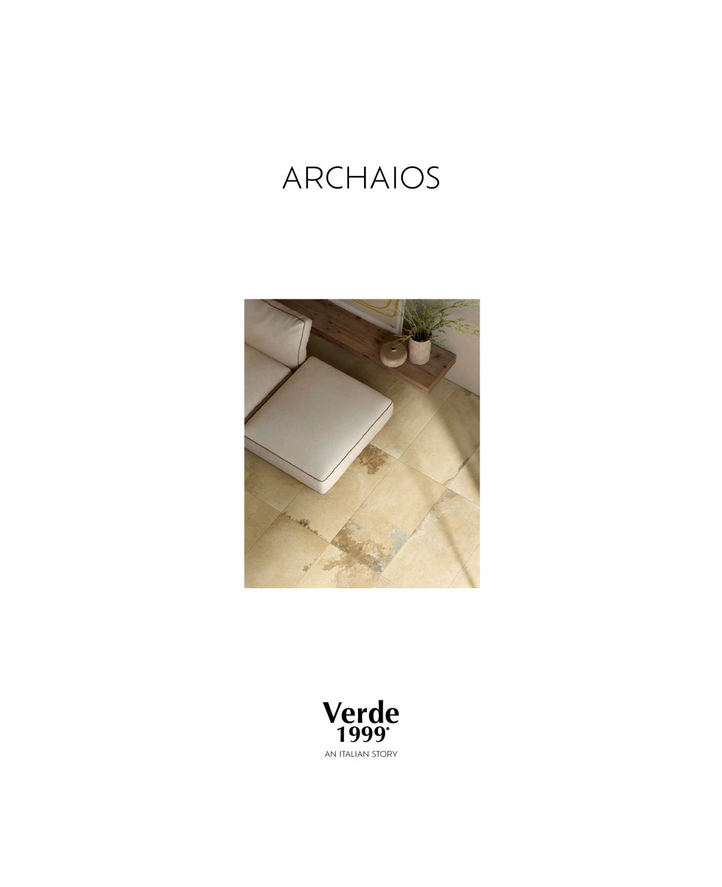
Verde 1999 / Campogalliano
Exklusiv bei Mexicotto
Als exklusiver Vertriebspartner für Verde 1999 bieten wir Ihnen Premium-Feinsteinzeug, das Sie sonst nirgendwo in Deutschland finden. Jede Kollektion wurde sorgfältig kuratiert — von der eleganten Marmoroptik bis zum rustikalen Schieferlook.
Alle Fliesen sind rektifiziert (maßhaltig geschliffen), 1 cm stark und in Formaten von 30×60 bis 100×100 cm erhältlich. Ideal für großzügige Wohn- und Geschäftsräume.
19 Kollektionen · Verde 1999
Entdecken Sie unsere Serien
Jede Kollektion interpretiert einen Naturstein auf ihre eigene Art — von mediterran bis nordisch, von klassisch bis modern. Kataloge als PDF zum Download.

Dakota
Markante Schieferstrukturen in zeitloser Eleganz. Für Räume mit Charakter und urbanem Flair.

Jurassic
Warme Kalksteintöne, die an die Juralandschaft erinnern. Natürlich elegant, zeitlos warm.

Archaios
Täuschend echte Solnhofener-Optik, hergestellt mit Ultra-HD-Inkjet. Auch als 2cm Outdoor und Runner-Package.
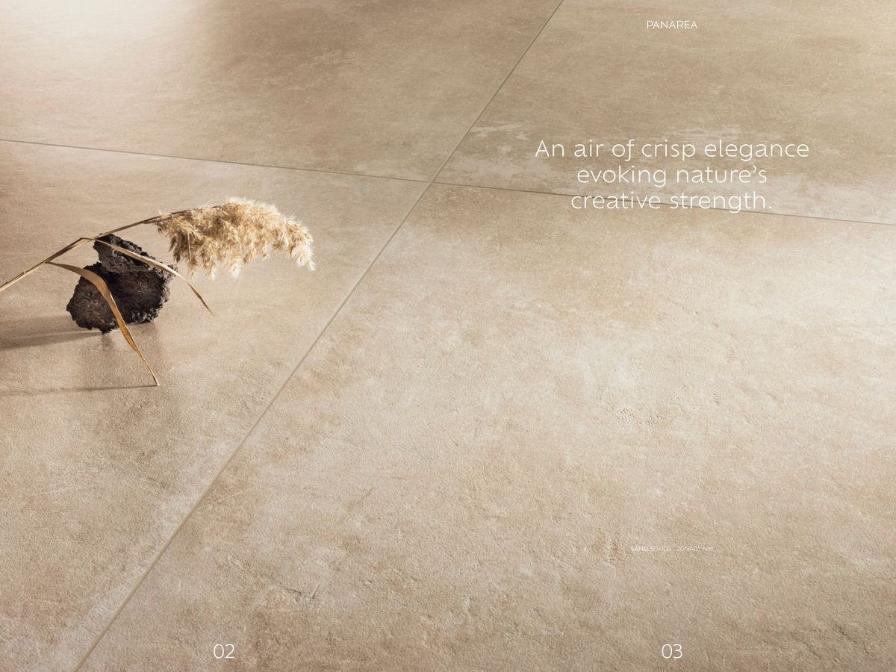
Panarea
Helle, luftige Steinoptik inspiriert von der gleichnamigen Äolischen Insel. Auch als Outdoor 2cm.
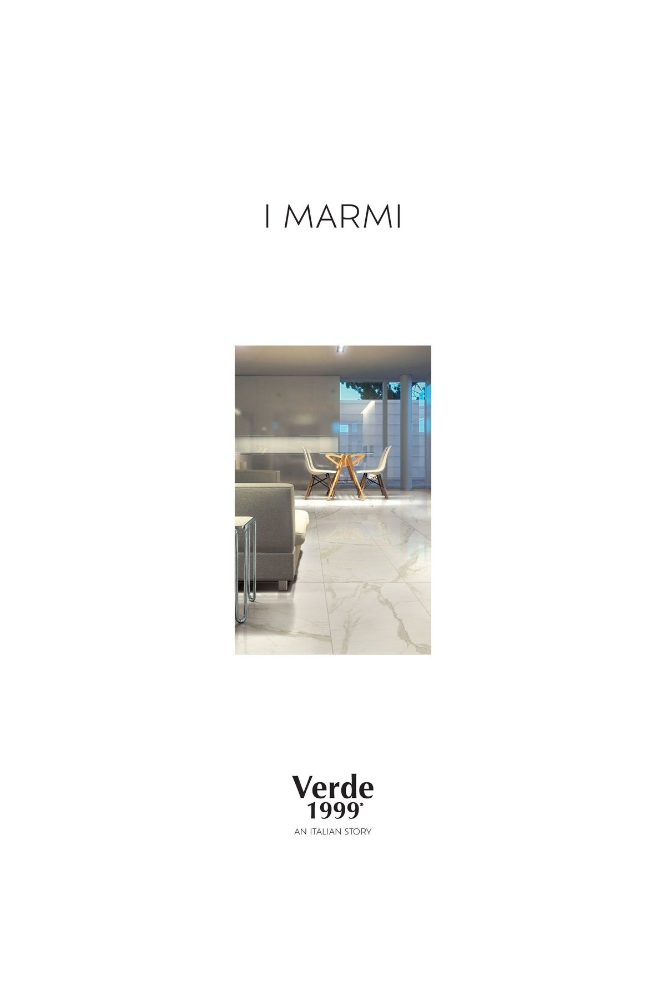
I Marmi
Statuario, Calacatta Oro, Carrara. Vollmasse-Feinsteinzeug mit Mosaik- und Chevron-Dekoren.

Aquarius
Kraftvolle Quarzitstrukturen mit lebendiger Maserung. Für Räume, die Stärke ausstrahlen.

Cosmopolitan
Kosmopolitischer Marmor-Look mit feiner Aderung. Elegant und vielseitig für anspruchsvolle Räume.
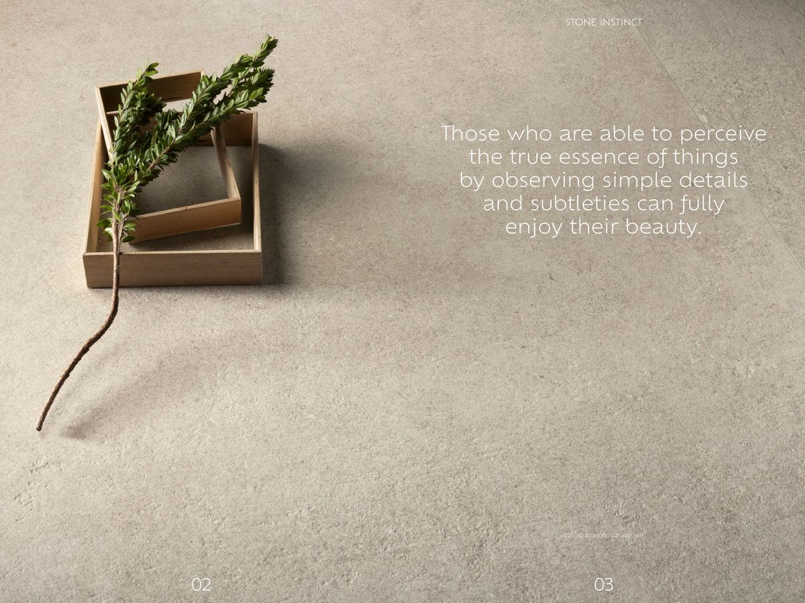
Stone Instinct
Authentische Steinstrukturen mit kraftvollem Charakter. Die Essenz natürlicher Felsoberflächen.

Lapis
Edle Steinstrukturen mit natürlicher Tiefe. Auch als 2cm Outdoor-Variante verfügbar.

Livingstone
Weicher Sandstein mit warmer Ausstrahlung. Zeitlos schön für Wohnbereiche und Eingangshallen.
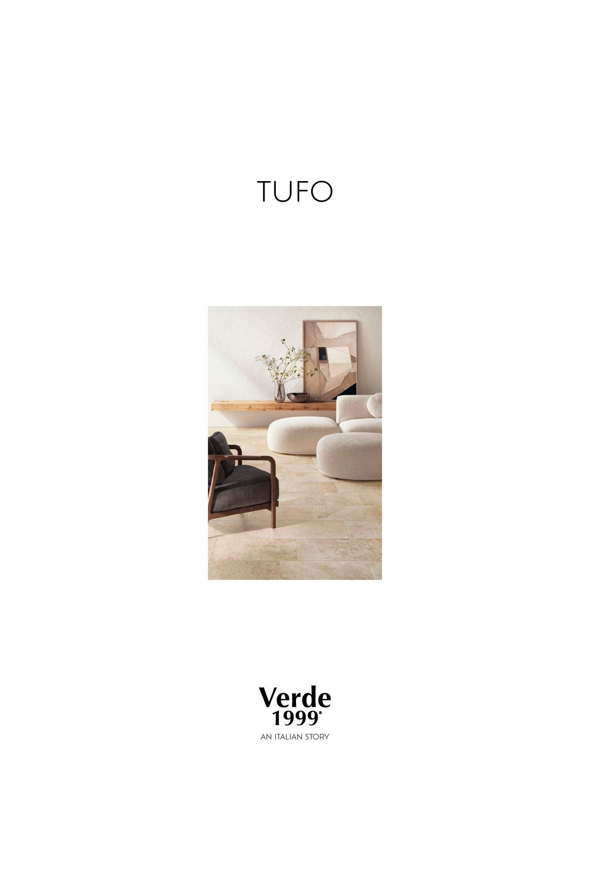
Tufo
Die Textur vulkanischen Tuffsteins — lebendig, warm und mit unverwechselbarem Charakter.
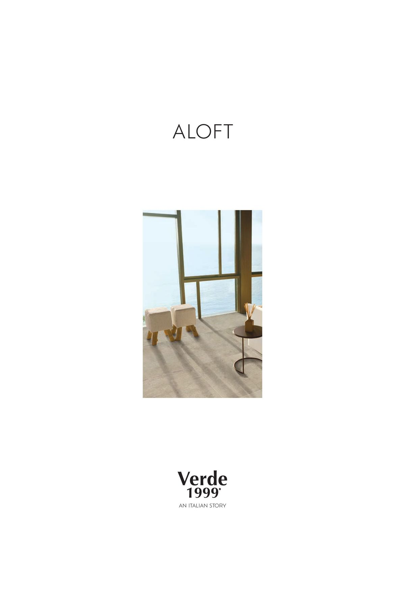
Aloft
Dezente, ruhige Steinästhetik mit samtig-matter Oberfläche. Auch als 2cm Outdoor-Platte erhältlich.
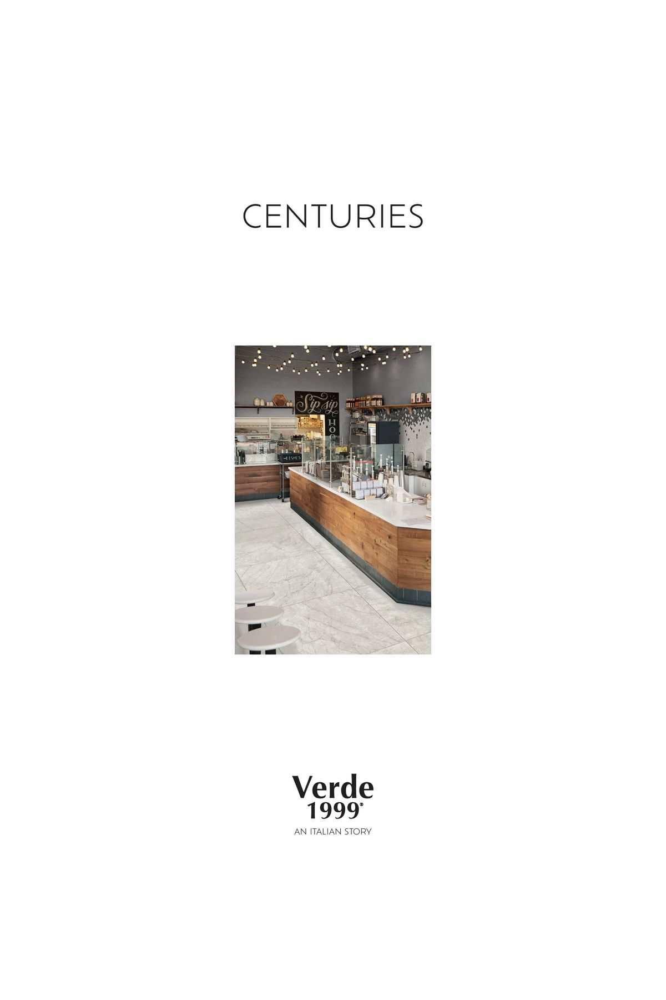
Centuries
Zeitlose Marmoreleganz mit jahrhundertealter Ausstrahlung. Große Formate für repräsentative Flächen.
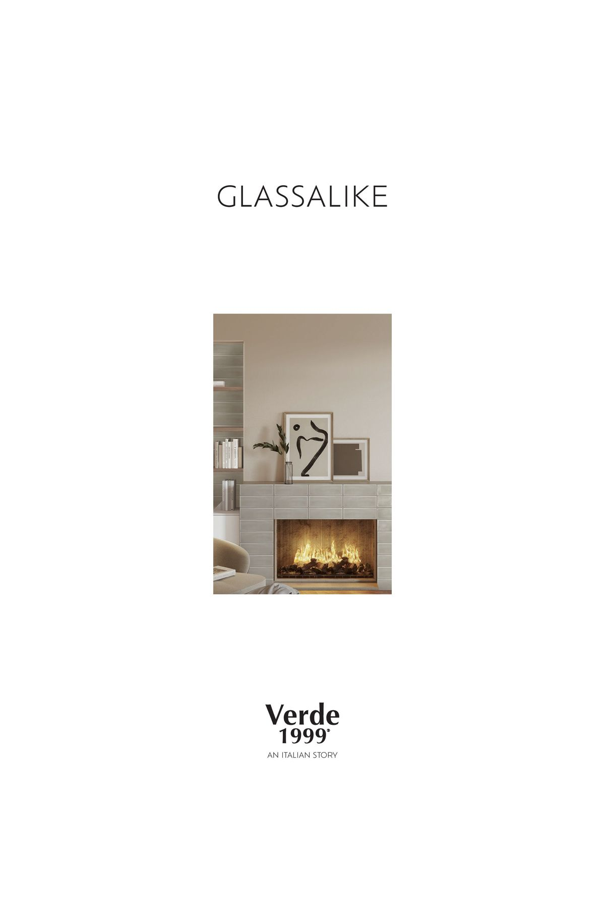
Glassalike
Glatt, glänzend und mit dem Schimmern von geschliffenem Glas. Einzigartige Ästhetik für moderne Räume.
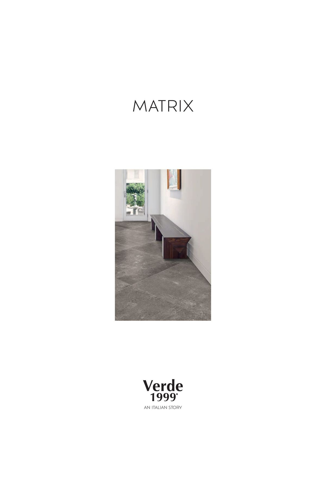
Matrix
Urbane Zementoptik mit Industrial-Charme. Matt, minimalistisch und ideal für moderne Architektur.
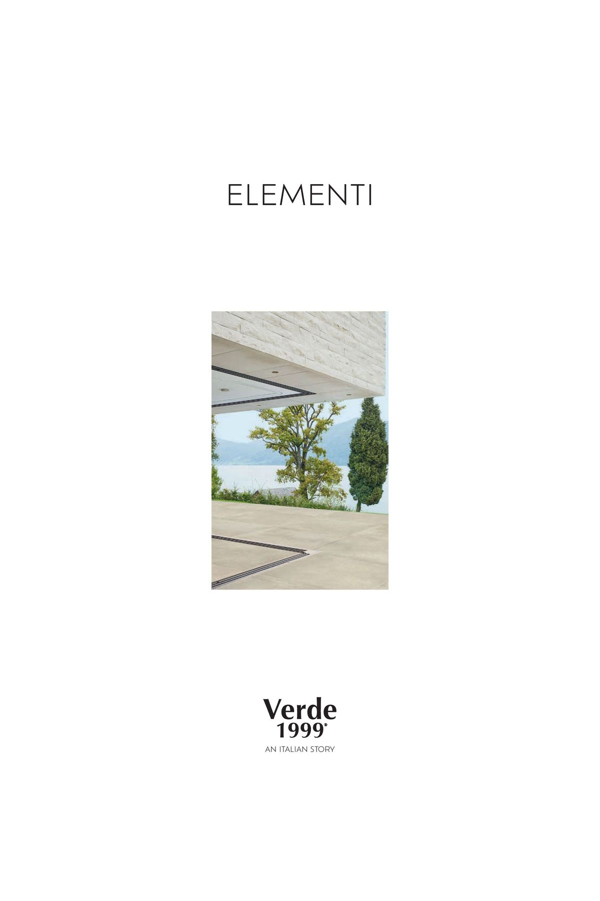
Elementi
Die Elemente der Natur eingefangen in Feinsteinzeug. Vielseitig einsetzbar, innen wie außen.
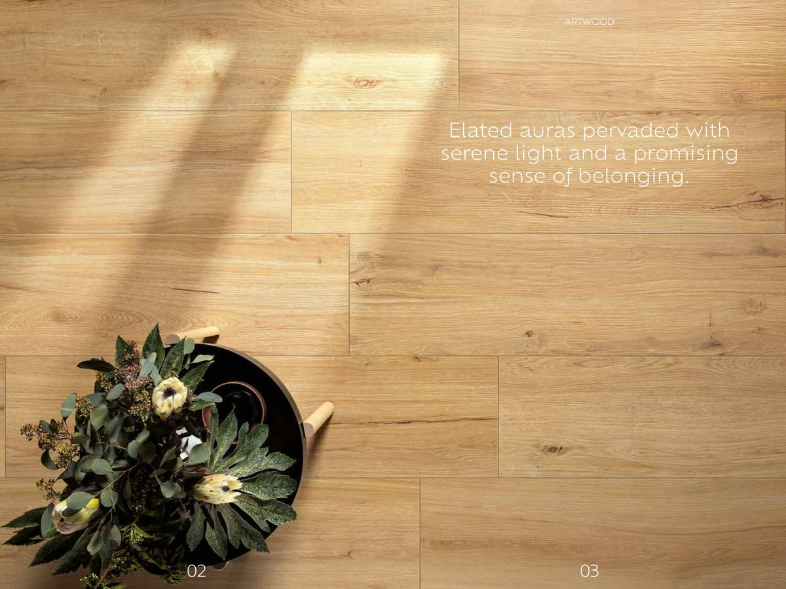
Artwood
Authentische Holzoptik in robustem Feinsteinzeug. Dielen-Format 30×120 cm, auch als 2cm Outdoor.
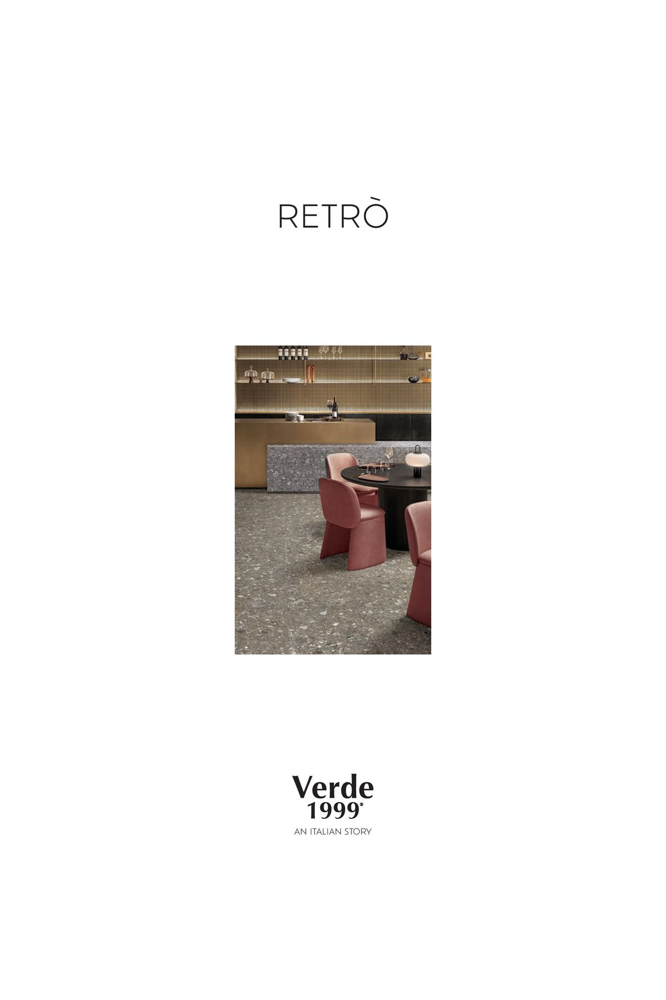
Retro
Nostalgische Zementfliesen-Muster in modernem Feinsteinzeug. Für Akzente mit Persönlichkeit.
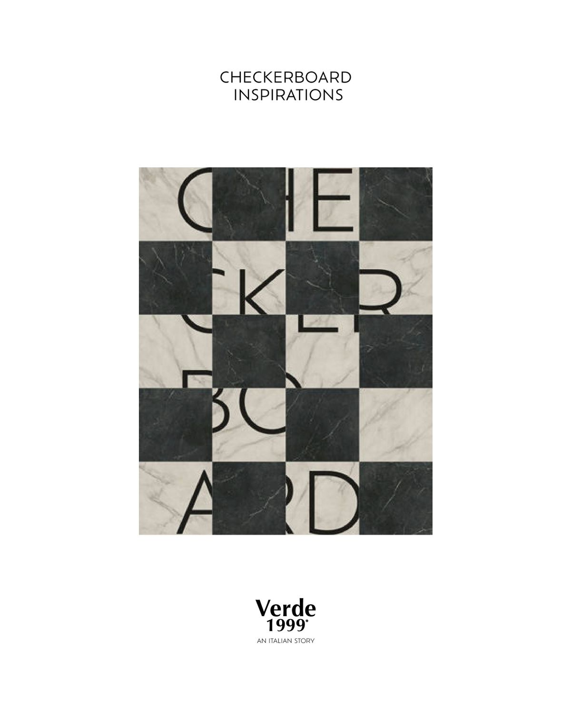
Checkerboard
Klassisches Schachbrettmuster in zeitgenössischer Interpretation. Schwarz-Weiß-Kontraste als Statement.
Kataloge herunterladen
Alle PDF-Kataloge
Laden Sie die kompletten Kataloge aller Verde 1999 Kollektionen als PDF herunter — mit Raumbildern, technischen Daten und Verlegemustern.
Technische Daten
Formate & Preise
| Format | Stärke | Preis ab | Hinweis |
|---|---|---|---|
| 30 × 60 cm | 1 cm | 38 €/m² | zzgl. MwSt. |
| 40 × 60 cm | 1 cm | 38 €/m² | zzgl. MwSt. |
| 60 × 60 cm | 1 cm | 40 €/m² | zzgl. MwSt. |
| 90 × 90 cm | 1 cm | 44 €/m² | zzgl. MwSt. |
| 100 × 100 cm | 1 cm | 46 €/m² | zzgl. MwSt. |
| 60 × 120 cm | 1 cm | 44 €/m² | zzgl. MwSt. |
Mindestbestellung: 15 m². Rektifiziert (maßhaltig geschliffen). Alle Preise zzgl. MwSt. Versand deutschlandweit inklusive.
Vorteile
Warum Feinsteinzeug?
Extrem robust
Feinsteinzeug ist kratzfest, säurebeständig und nahezu unverwüstlich. Ideal für stark beanspruchte Bereiche.
Täuschend echt
Modernste Drucktechnologie erzeugt Oberflächen, die von echtem Naturstein kaum zu unterscheiden sind.
Pflegeleicht
Keine Imprägnierung nötig. Einfach reinigen, dauerhaft schön. Weniger Aufwand als echter Naturstein.
Beratung
Ihre Kollektion finden
Sie sind unsicher, welche Kollektion zu Ihrem Projekt passt? Wir beraten Sie persönlich und helfen Ihnen, die perfekte Wahl zu treffen.